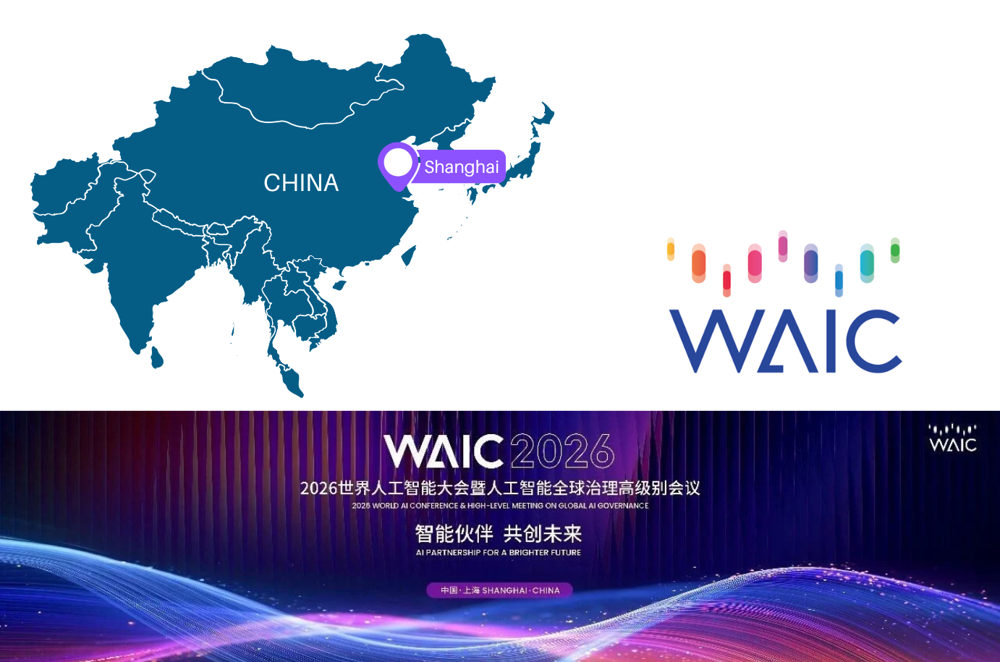
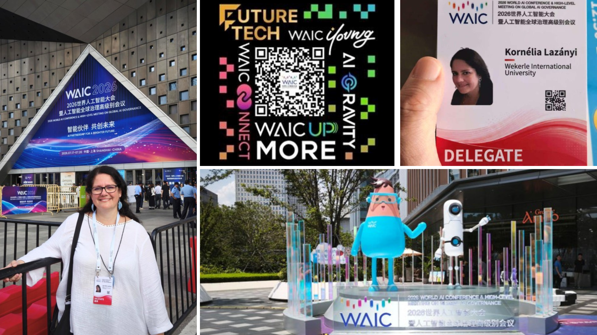
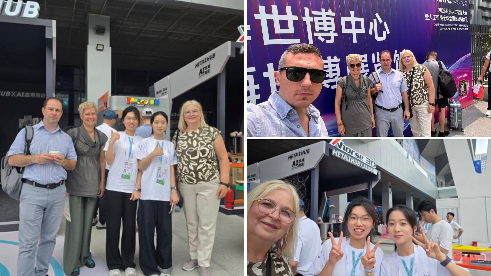
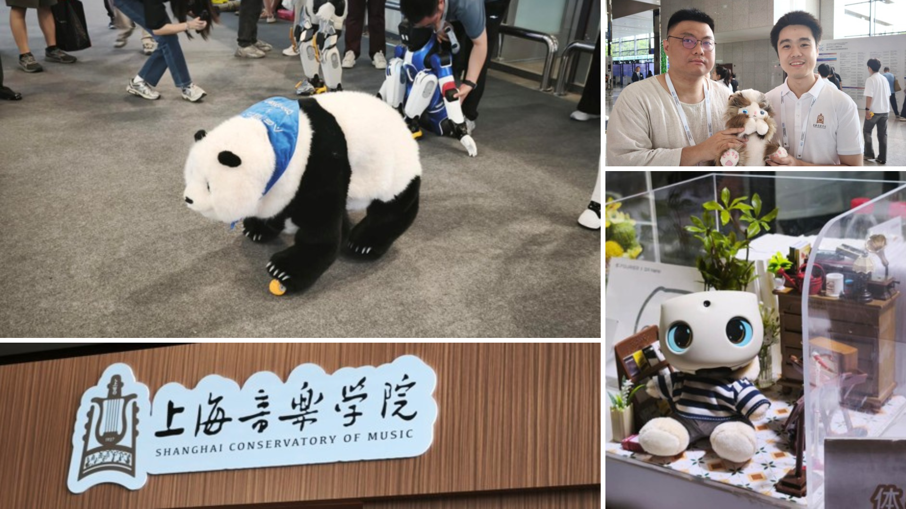
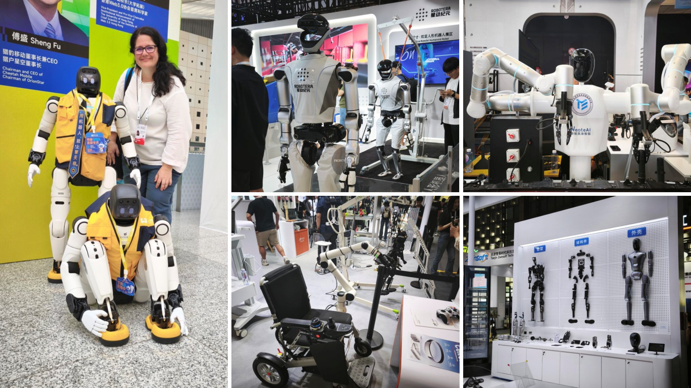
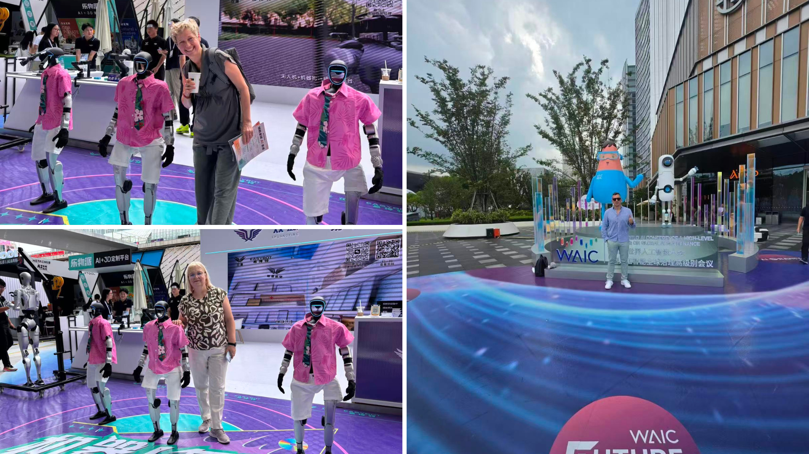
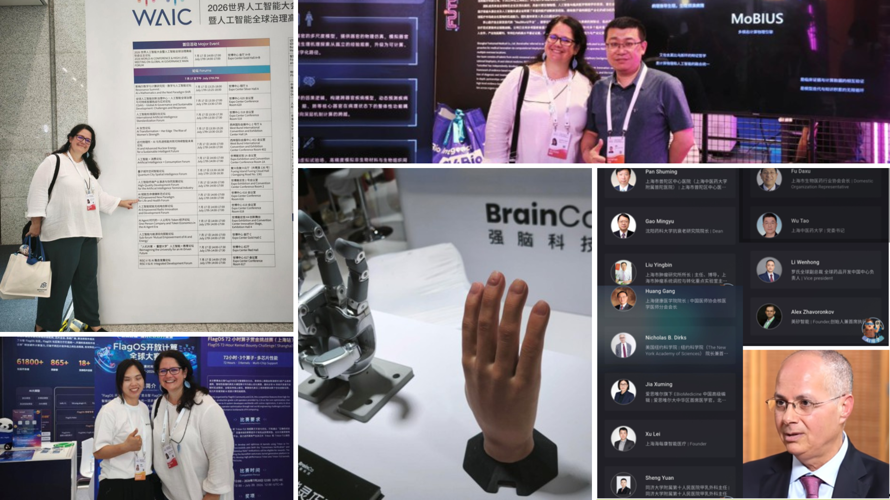

3 August 2026
AI Innovation and New International Partnerships
Following visits to two leading Chinese universities, the second half of the study visit focused on emerging technologies, international networking and identifying new collaboration opportunities for the Erasmus+ MedIT-HuB project.

Day 3 – World Artificial Intelligence Conference (WAIC), Shanghai
The third day of the study visit was dedicated to the World Artificial Intelligence Conference (WAIC), one of the world’s leading events in artificial intelligence. Held in Shanghai from 17 to 20 July 2026 under the theme “Intelligent Partners, Creating the Future Together,” the conference brought together leading researchers, innovators and technology companies from around the world. With more than 140 thematic forums, over 1,400 international guests, an exhibition area exceeding 100,000 m² and more than 3,000 exhibits presented by over 1,100 companies, WAIC provided an outstanding environment for benchmarking the latest technological developments while identifying new opportunities for international collaboration relevant to the MedIT-HuB project.


The exhibition showcased the latest innovations and leading players shaping the future of artificial intelligence. One particularly inspiring area focused on the application of AI in education and child development. The Shanghai Conservatory of Music demonstrated how AI-powered personalised interactive companions can support music therapy for children. Similar solutions presented by other exhibitors showed how artificial intelligence is increasingly being used to create personalised educational experiences and improve children’s wellbeing through innovative digital technologies.

Healthcare and medical technologies were naturally among the strongest themes of the exhibition. Visitors could experience a broad range of innovations, including general-purpose humanoid robots, specialised medical robots and a Chinese-developed surgical robot. Other exhibitors presented AI-powered online medical consultation services, advanced medical modelling technologies and intelligent rehabilitation solutions, illustrating the rapid pace at which artificial intelligence is transforming healthcare. The exhibition also highlighted how AI technologies are rapidly moving from research laboratories into real-world industrial and healthcare applications.

Beyond the exhibition itself, WAIC offered an exceptional academic programme. For the first time, the conference hosted WAIC Academic, an independently organised international AI conference chaired by Turing Award laureate Andrew Chi-Chih Yao. The programme featured keynote lectures and discussions by internationally renowned researchers, including Turing Award winners Andrew Chi-Chih Yao, Yoshua Bengio and Richard Sutton, alongside Nobel Prize laureate Omar M. Yaghi. The sessions explored topics ranging from AI for Science and the foundations of general intelligence to the latest technological frontiers, including world models, AI coding, open-source agents and emerging AI-driven business models.

The conference also addressed the broader societal impact of artificial intelligence through international discussions on AI governance, ethics, digital trust and sustainable development. High-level representatives from scientific academies, international organisations and research institutions exchanged perspectives on the responsible development of AI, while the AI Empowered New Paradigm for Life and Health Forum focused specifically on the integration of AI into healthcare. The programme covered topics including precision diagnosis and treatment, AI-assisted anti-ageing research, neural wearable technologies and the application of artificial intelligence in life sciences, demonstrating how rapidly AI is reshaping the future of medicine.
Beyond the technologies themselves, WAIC proved to be an excellent platform for building international partnerships. Throughout the exhibition, we met representatives of innovative companies, research organisations and technology communities interested in cooperating with the MedIT-HuB project. Discussions covered future strategic partnerships, the involvement of international experts in our expert pool and opportunities to test and validate the educational materials developed within the project.

Several organisations also showed strong interest in TAM CERT’s compliance-related educational materials. As entering the European medical technology market requires a thorough understanding of certification and regulatory compliance, these learning materials attracted considerable attention from companies planning future activities in Europe. The conference therefore not only showcased technological innovation but also created valuable opportunities to strengthen the MedIT-HuB network and establish new international collaborations.
To Be Continued in Part 3
The World Artificial Intelligence Conference marked another important milestone of our study visit—but the journey continued beyond the exhibition halls.
In the final part of this report, we will share the last stop of the study visit and the promising collaboration opportunities that emerged from our meetings in Shanghai.
The views and opinions expressed are those of the author(s) and do not necessarily reflect those of the European Union or the Tempus Public Foundation. Neither the European Union nor the granting authority can be held responsible for them.